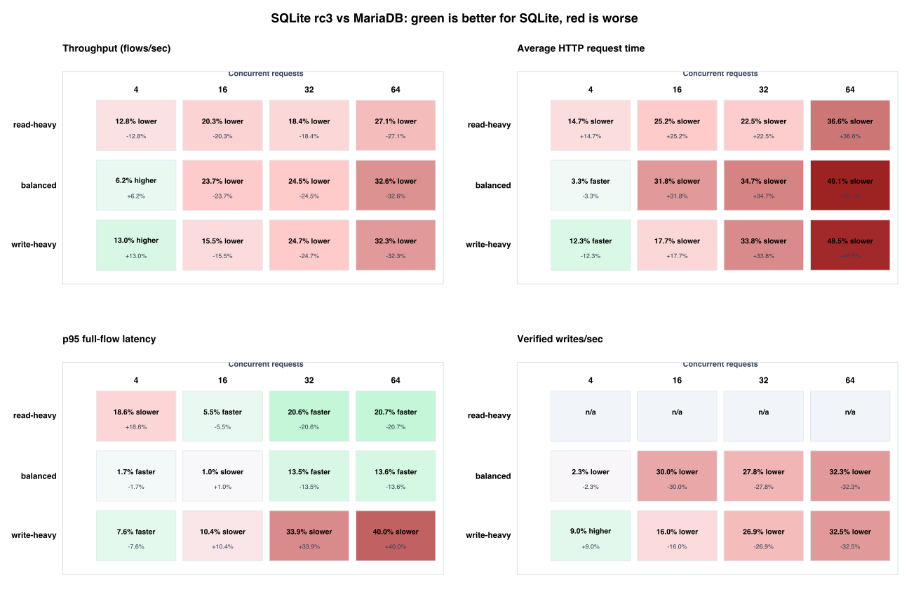
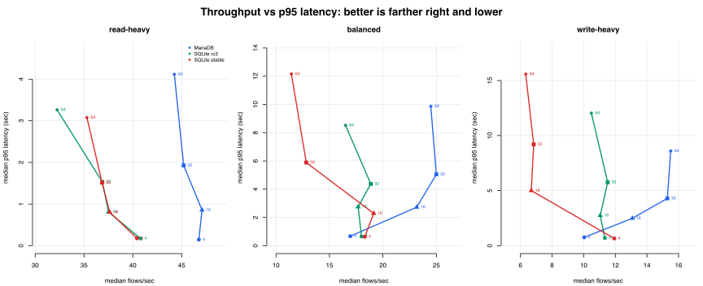
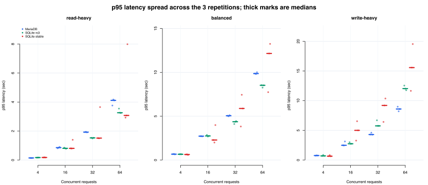
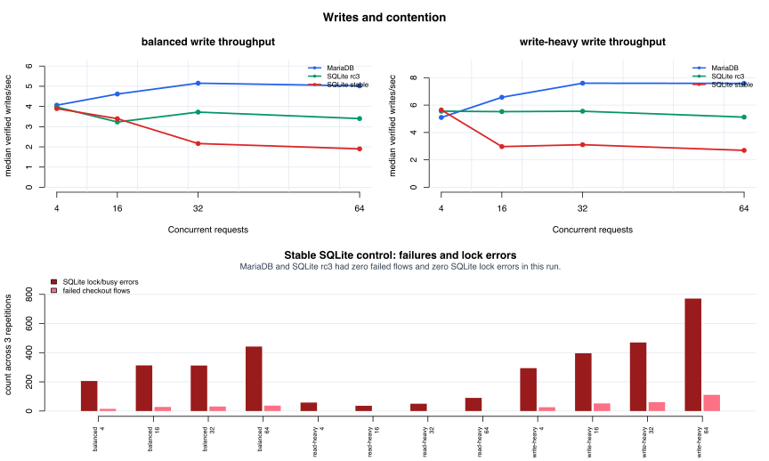

WooCommerce 5GB SQLite Benchmark: Visual Report
This is a merged report: it combines the supplemental concurrent-request point 4 with the earlier points 16, 32, 64. The clearest view is not a box plot: each matrix cell has only three repetitions, so this report uses heatmaps, scatter plots, and repetition dot plots with median marks.
Read the heatmap first. Green means SQLite rc3 improved that metric compared with MariaDB; red means it regressed. For latency metrics, green means lower latency. For throughput metrics, green means more completed work.
How The Test Was Conducted
The measured window starts after fixture restore, server startup, login setup, and warm-up. These are browser-equivalent WooCommerce flows driven over HTTP, not literal Chrome automation.
- Create one fresh WordPress site per database variant from the same WordPress package.
- Install the SQLite driver or configure MariaDB, install WooCommerce, and generate the same seeded 5GB WooCommerce fixture for every variant.
- Before every measured cell, restore that variant's clean database snapshot so earlier writes do not affect the next run.
- Start local nginx and PHP-FPM for that one case, then create logged-in worker sessions outside the measured timing window.
- Warm the site for 10 seconds, then measure for 30 seconds with the configured number of concurrent workers.
- The load generator did not open Chrome; it issued browser-equivalent HTTP requests for the same user journeys.
- Public browse flow: visit the shop/home page, open product pages, and perform catalog searches.
- Cart flow: open a product page, submit add-to-cart, and load the cart page.
- Checkout flow: add a product, open checkout, submit the WooCommerce order form with benchmark billing details, and verify that an order was created.
- Admin read flow: log in as an administrator and open WooCommerce order-admin screens.
- Repeat each workload/concurrent-request/variant cell three times and report medians, plus failures, write verification, WAL size, and SQLite lock/busy logs.
1. SQLite rc3 vs MariaDB: 3x4 Delta Heatmaps

2. Throughput vs Tail Latency

3. Repetition Spread Instead Of Boxplots

4. Writes And Lock Contention

5. What The SQLite Lock/Busy Errors Mean
Important distinction: HTTP status errors and benchmark flow failures are different. A request can return HTTP 200 and still fail the benchmark if the expected user outcome did not happen.
The high-lock cell is SQLite stable control, write-heavy, 64 concurrent requests: 771 SQLite lock/busy log events while serving 2,371 measured HTTP requests across 883 benchmark flows. Every measured HTTP request returned status 200; there were 0 HTTP 500 responses.
The consequence was still user-visible: 111 checkout flows failed semantic verification. The failing checkout paths returned ordinary WooCommerce pages with status 200, but the checkout nonce/session state was missing and no order was verified. The benchmark did not retry those failed flows at the application level.
The read-heavy stable-control cases also logged lock errors because they were not database-write-free. They had 234 lock/busy events across 12,018 measured HTTP requests and 0 failed flows. Product and admin read pages triggered writes for Action Scheduler claims and WooCommerce/WordPress transients such as shipping-method counts, related-product caches, and customer/report caches. Those writes were non-critical for the rendered page, so the responses stayed 200.
| Scope | HTTP requests | Status mix | HTTP 5xx | HTTP non-2xx | Benchmark failed flows | Write verification failures | SQLite lock/busy events |
|---|---|---|---|---|---|---|---|
| MariaDB baseline | 48,738 | 200: 48,738 | 0 (0.00%) | 0 (0.00%) | 0 (0.00%) | 0 | 0 |
| SQLite rc3 | 38,792 | 200: 38,792 | 0 (0.00%) | 0 (0.00%) | 0 (0.00%) | 0 | 0 |
| SQLite stable control | 33,471 | 200: 33,471 | 0 (0.00%) | 0 (0.00%) | 361 (1.67%) | 361 | 3,438 |
| All SQLite variants combined | 72,263 | 200: 72,263 | 0 (0.00%) | 0 (0.00%) | 361 (0.79%) | 361 | 3,438 |
| Stable 64 concurrent requests detail | Flows | HTTP requests | Status mix | HTTP 5xx | Benchmark failed flows | Write verification failures | SQLite lock/busy events |
|---|---|---|---|---|---|---|---|
| stable write-heavy, 64 concurrent requests, all reps | 883 | 2,371 | 200: 2,371 | 0 (0.00%) | 111 (12.57%) | 111 | 771 |
| rep1 | 384 | 1,047 | 200: 1,047 | 0 (0.00%) | 34 (8.85%) | 34 | 292 |
| rep2 | 276 | 735 | 200: 735 | 0 (0.00%) | 41 (14.86%) | 41 | 274 |
| rep3 | 223 | 589 | 200: 589 | 0 (0.00%) | 36 (16.14%) | 36 | 205 |
Variant Totals
| Variant | Median flows/sec across cells | Failed flows | Write verification failures | SQLite lock/busy errors |
|---|---|---|---|---|
| MariaDB | 23.82 | 0 | 0 | 0 |
| SQLite rc3 | 17.84 | 0 | 0 | 0 |
| SQLite stable | 15.56 | 361 | 361 | 3,438 |
SQLite rc3 Delta Table
| Workload | Concurrent requests | Throughput | Avg request time | p95 latency | Verified writes/sec |
|---|---|---|---|---|---|
| read-heavy | 4 | 12.8% lower | 14.7% slower | 18.6% slower | n/a |
| read-heavy | 16 | 20.3% lower | 25.2% slower | 5.5% faster | n/a |
| read-heavy | 32 | 18.4% lower | 22.5% slower | 20.6% faster | n/a |
| read-heavy | 64 | 27.1% lower | 36.6% slower | 20.7% faster | n/a |
| balanced | 4 | 6.2% higher | 3.3% faster | 1.7% faster | 2.3% lower |
| balanced | 16 | 23.7% lower | 31.8% slower | 1.0% slower | 30.0% lower |
| balanced | 32 | 24.5% lower | 34.7% slower | 13.5% faster | 27.8% lower |
| balanced | 64 | 32.6% lower | 49.1% slower | 13.6% faster | 32.3% lower |
| write-heavy | 4 | 13.0% higher | 12.3% faster | 7.6% faster | 9.0% higher |
| write-heavy | 16 | 15.5% lower | 17.7% slower | 10.4% slower | 16.0% lower |
| write-heavy | 32 | 24.7% lower | 33.8% slower | 33.9% slower | 26.9% lower |
| write-heavy | 64 | 32.3% lower | 48.5% slower | 40.0% slower | 32.5% lower |
Method Note
This visual report is generated from aggregate.csv, results.csv, and results.json. It does not rerun the benchmark. The benchmark restored a database snapshot before every measured case, excluded setup/login from the measured window, used a 10s warm-up, measured 30s, and repeated every workload/concurrent-request cell three times.